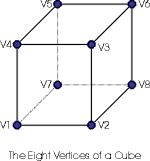
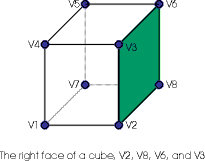

This document describes the 1.2 version P3DC model description language used by the 3D rendering engine in my library. The notation is EBNF with the following meanings:
Models begin with a model keyword and a name, their bodies are enclosed in braces. Model descriptions may not be nested but may be several to a file. The model namespace is flat in P3DC therefore you are not allowed to have two models named cube for example.
[The model statement is defined as a way of creating heirarchical models but is not currently implemented.]
MODEL ::= Model NAME MODEL-BODY
MODEL_BODY ::= { STATEMENT* }
STATEMENT ::= [ ORIGIN_STATEMENT ] | [ COLOR_STATEMENT ]* | [ VERTEX_STATEMENT ]* | [ TEXTURE_STATEMENT ]* | [ POINT_STATEMENT ]* | [ MODEL_STATEMENT ]* | [ LINE_STATEMENT ]* | [ FACE_STATEMENT ]*
ORIGIN_STATEMENT ::= Origin CONSTANT , CONSTANT , CONSTANT ;
COLOR_STATEMENT ::= Color NAME = COLOR_TUPLE ;
VERTEX_STATEMENT ::= Vertex NAME = CONSTANT , CONSTANT , CONSTANT ;
TEXTURE_STATEMENT ::= Texture NAME = Decal | LIGhtmap | DETail [ , Wrap ] ;
POINT_STATEMENT ::= Point [ COLOR_SPEC ] NAME ;
LINE_STATEMENT ::= Line [ COLOR_SPEC ] NAME , NAME ;
FACE_STATEMENT ::= Face [ TEXTURE_LIST ] [ COLOR_SPEC ] VERTEX_SPEC , VERTEX_SPEC , VERTEX_SPEC [ , VERTEX_SPEC]* ;
MODEL_STATEMENT ::= Model NAME [ COLOR SPEC ] NAME NORMAL_SPEC CONSTANT ;
VERTEX_SPEC ::= NAME [ NORMAL_SPEC ] [ TEXTURE_COORD ]*
COLOR_SPEC ::= ( NAME )
TEXTURE_LIST ::= < NAME [ , NAME ]* >
NORMAL_SPEC ::= [ CONSTANT , CONSTANT , CONSTANT ]
TEXTURE_COORD ::= < CONSTANT , CONSTANT >
COLOR_TUPLE ::= RED , GREEN , BLUE [ , ALPHA ]
RED ::= COLOR_CONSTANT
GREEN ::= COLOR_CONSTANT
BLUE ::= COLOR_CONSTANT
ALPHA ::= COLOR_CONSTANT
COLOR_CONSTANT ::= 0 <= CONSTANT <= 255.0
CONSTANT ::= floating point number
NAME ::= character string < 63 characters long from the
set A-Za-z0-9_$ with the initial character from
the set A-Za-z.
This example file describes a textured cube. As you can see it assumes the texture for the cube is layed out in a cross topology (think about what it would look like if you unfolded all of the cube sides.) There is also a specification for a lightmap (which creates an illumination effect on the top and bottom.) The light map could have been part of the same texture file however if you wish to use the same file as both a light map and a base texture (obviously you have to use different parts of the texture for this!) then you can do that by assigning the same texture to the base_texture and the lightmap_texture attributes when the model is instantiated. (see usage below)
Another important point to remember is that faces are specified with their vertices in counter-clockwise order. This determines the "front" for the face where the texture will appear. You can have different textures and/or colors on both the front and back of a face, just specify the face twice, once with the textures one way and once with them the other way.
The cube was chosen as a good example as it is easy to visualize and understand. The file stdmodels.3dc will eventually have standard models for all of the basic shapes, cube, cone, sphere, pyramid, cylinder.
As you can see in the picture at the right, the cube has eight vertices. In the first versions of the library each side (or face) of the cube had its own set of vertices, this allowed each side to have unique texture co-ordinates but it also meant that to transform the cube into my 3D world I needed to transform 24 vertices! (6 sides x 4 vertices each). Now I transform 8 vertices and I'm done. This is an example of where not doing something (transforming extra vertices) makes things a whole lot faster.
This cube still has six faces, I've colored one in the picture at left to show you an example of one. This face is defined by the four vertices V2, V8, V6, and V3. Note that if you were on the right hand side of this cube and looking at it straight on, those vertices would be in counter clockwise order. It is not important which vertex is first and last in the list, so we could equivalently use the vertices V3, V2, V8, and V6. And get exactly the same face, but if we reverse the order to be clockwise then we would be defining the face on the inside of the cube.
In a previous version of this language I assigned a name to each face, after implementing the language I found the name to be redundant and so have deleted it from the specification. The things that are named however (things like colors and textures) are named so that they may be changed when the model is instantiated by the library. Ok, so lets look a the model definition as it would appear in the file.
#
# Definition for the CUBE model
#
model cube {
The non-comment line should be the keyword model followed by the name of the model. Since all models share a single name space if you had several variations of cubes you might call this one unit_cube instead of just cube. Note though that you can change the cubes overall dimensions when the cube is instantiated.
origin = 0, 0, 0 ;
color base_color = 0, 255, 0 ;
color highlight = 255, 0, 0 ;
texture base_texture = decal, wrap ;
texture light_map = lightmap ;
The next few lines define a catalog of attributes for the model, the first, origin, defines where the center of the model is in its local 3D model space. This is the point upon which the model with rotate or turn when you use the model api in the library to change its attitude. This is also the point of the model that can be precisely located when you use the p3dc_locate_model function. The origin does not have to be a vertex or even within the bounds of the model.
Following the origin there are two colors defines, one named base_color and the other named highlight. You can assign different color names (and defaults) to the model using these statements, later when the model is instantiated the colors can be changed with the p3dc_model_set_color function.
Finally there are two lines defining textures, one called base_texture and one called light_map. (note that the spelling is changed to prevent it from being confused with the keyword 'lightmap'). When the model has been instantiated you will load textures and then apply them using the names from the model file and the api call p3dc_model_set_texture.
vertex V1 = -0.5, -0.5, -0.5 ;
vertex V2 = 0.5, -0.5, -0.5 ;
vertex V3 = 0.5, 0.5, -0.5 ;
vertex V4 = -0.5, 0.5, -0.5 ;
vertex V5 = -0.5, 0.5, 0.5 ;
vertex V6 = 0.5, 0.5, 0.5 ;
vertex V7 = 0.5, -0.5, 0.5 ;
vertex V8 = -0.5, -0.5, 0.5 ;
After the attributes the eight vertices are defined, they are named V1 through V8 (not very interesting I know). As you can see they define a cube where the corners are between -0.5, -0.5, -0.5 and 0.5, 0.5, 0.5.
Take a moment to consider what that means, it means that the center of gravity of this cube is 0,0,0 (half way between all the points). Alternatively you could put all of your vertices between 0 and 1 and then set the origin to 0.5, 0.5, 0.5. The latter works, however when you scale the model on instantiation, the origin doesn't move. so if it isn't at 0,0,0 you will get some unexpected (but predictable) results.
Finally we get to define some sides and they appear as follows:
#
# side faces
#
face <base_texture> (base_color)
V1 <64,192>, V2 <128, 192>, V3 <128, 255>, V4 <64, 255> ;
face <base_texture> (highlight)
V2 <0, 128> , V7 <64, 128>, V6 <64, 192>, V3 <0, 192> ;
face <base_texture>
V5 <64, 128>, V6 <128,128>, V7 <128, 192>, V8 <64, 192> ;
face <base_texture>
V1 <128, 128>, V4 <192, 128>, V5 <192, 192>, V8 <128, 192> ;
#
# top and bottom faces
#
face <base_texture, light_map>
V4 <64, 64> <0, 0>, V3 <128,64><0,255>,
V6 <128,128><255,255>, V5 <64,128><255,0> ;
face <base_texture, light_map>
V1 <64,0><0, 0>, V8 <128,0><0,255>,
V7 <128,64><255,255>, V2 <64,64><255,0> ;
}
As you can see from the lines above the faces are simply statements that collect vertices into groups (faces) and place textures on them at particular co-ordinates.
The texture co-ordinates in this case are going from 0 to 255 which is a Glide standard however in the very near future they will go between 0 and 1.0 for the full texture. This makes understanding their mid-points etc easier. (and it is Glide 3 compatible so that is a bonus.)
Finally the model description ends with a closing brace '}' which tells the parsing function that there is no more model to parse.
Document ID $Id: model-lang.html,v 1.3 1999-09-01 21:37:41-07 cmcmanis Exp $